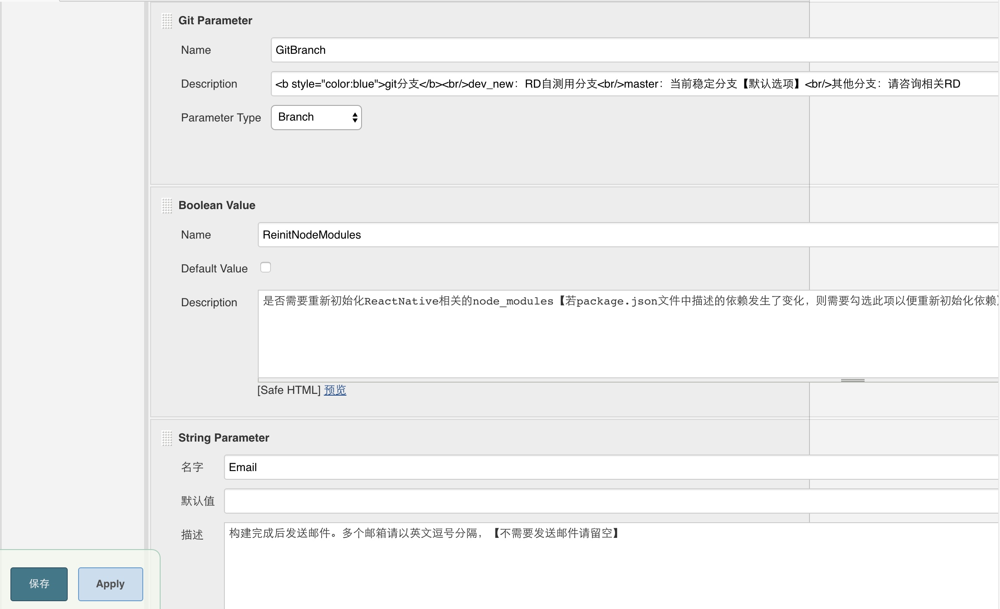
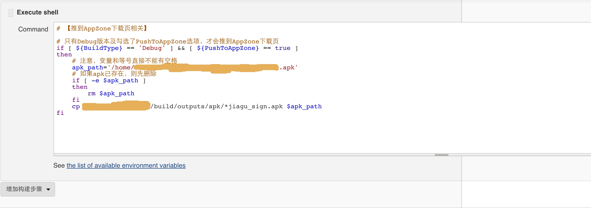

查看CentOS系统版本
cat /etc/redhat-release
下述内容针对CentOS release 6.7 (Final)版本系统展开。
1. 安装
安装步骤参考官方文档。
1.1 安装Jenkins
sudo wget -O /etc/yum.repos.d/jenkins.repo http://pkg.jenkins-ci.org/redhat/jenkins.repo
sudo rpm --import https://jenkins-ci.org/redhat/jenkins-ci.org.key
sudo yum install jenkins
1.2 安装Java
Jenkins使用Sun版本的Java，如CentOS预装了GCJ版本的Java，需要先卸载之，再安装与Sun版本兼容的OpenJDK。
卸载GCJ
使用java -version命令查看当前安装的java版本，如出现类似以下信息，说明预装了GCJ版本的Java，需要执行yum remove java命令卸载。
java version "1.5.0"
gij (GNU libgcj) version 4.4.6 20110731 (Red Hat 4.4.6-3)
安装OpenJDK并配置环境变量
Jenkins运行只需要JRE环境，但Android编译打包需要JDK环境，所以我们需要安装JDK环境（安装JDK时会自动安装JRE）。
查找仓库中可安装的OpenJDK版本
sudo yum search openjdk出现以下类似结果
java-1.8.0-openjdk-devel.x86_64 : OpenJDK Development Environment根据上一步结果，执行以下命令安装相应版本的JDK
sudo yum install java-1.8.0-openjdk-devel.x86_64配置环境变量
sudo vim /etc/profile# jdk export JAVA_HOME=/usr/lib/jvm/java-1.8.0-openjdk.x86_64 export PATH=$PATH:$JAVA_HOME/binsource /etc/profile
延伸：不安装jdk，打包时会报错
A problem occurred evaluating project ':app'. com/sun/tools/attach/VirtualMachine
1.3 修改防火墙
Jenkins默认监听8080端口，需修改防火墙允许8080端口。
使用以下命令修改iptables，允许8080端口，然后保存并重启iptables服务。
# 修改iptables，修改完成后，:wq保存
sudo vim /etc/sysconfig/iptables
# 重启iptables服务
sudo service iptables restart
1.4 Jenkins启动/停止/重启
# 分别对应Jenkins的启动、停止、重启
sudo service jenkins start/stop/restart
# 设置Jenkins开机启动
sudo chkconfig jenkins on
2. 配置
2.1 初始化Jenkins
浏览器访问Jenkins，地址http://ip:8080
Administrator密码，默认位于/var/lib/jenkins/secrets/initialAdminPassword。按照Jenkins提示安装所需的plugins
部分插件可能需要梯子才能安装，怎么使用梯子请见3。CentOS安装Shadowsocks客户端
前往这里 http://my.oschina.net/kcw/blog/424636 。Add Credentials
Kind: SSH Username with private key
2.2 配置gradle
在CentOS中下载并配置gradle
下载地址 http://www.gradle.org/ ，解压gradle至某路径下，如/usr/local/lib/gradle-1.12，配置环境变量：
sudo vim /etc/profile
在该文件底部加上
# gradle
export GRADLE_HOME=/usr/local/lib/gradle-1.12 # 刚解压的路径
export PATH=$PATH:$GRADLE_HOME/bin
:wq后
source /etc/profile
echo $GRADLE_HOME检查是否配置成功。
在Jenkins中配置gradle
- 安装插件（若2.1中已安装则跳过）：
Jenkins->系统管理->插件管理->选择“gradle plugin”下载并安装。 - 配置gradle home：
Jenkins->系统管理->Global Tool Configuration->Gradle安装，配置GRADLE_HOME。
2.3 设置邮箱（可选）
Jenkins->系统设置
3. 项目代码调整
3.1 设置自动下载Android SDK
因各项目buildToolsVersion不尽相同，如果预先在打包服务器上安装各个版本的Android SDK，会比较繁琐且不够灵活。所以采取了在项目gradle文件中添加配置，当不存在Android SDK时自动下载。
修改Project的gradle文件，在buildscript、dependencies中，添加相应代码，如下。
buildscript {
repositories {
...
// 方法1，配置后自动下载依赖的Android SDK
//maven { url 'https://jitpack.io'}
// 方法2【推荐】，通过自有仓库获取三方依赖库，可利用缓存加快获取依赖包的速度
maven {
url 'http://xxx.xxx.com:8081/artifactory/remote-repos'
credentials {
username = 'xxx'
password = 'xxx'
}
}
}
dependencies {
...
// 配置后自动下载依赖的Android SDK
classpath 'com.github.JakeWharton:sdk-manager-plugin:220bf7a88a7072df3ed16dc8466fb144f2817070'
}
}
修改各module的gradle文件，在首行添加以下代码。
apply plugin: 'android-sdk-manager' // 配置后自动下载依赖的Android SDK
3.2 为gradlew文件设置可执行权限
执行./gradlew assembleDebug时，可能会提示以下错误
FATAL: command execution failed
java.io.IOException: Cannot run program "/var/lib/jenkins/workspace/your-project-name/gradlew" (in directory "/var/lib/jenkins/workspace/your-project-name"): error=13, Permission denied
原因是gradlew没有可执行权限。有以下2种解决方法。【推荐方法1】
在将gradlew文件commit到git中时就赋予其可执行权限。参考 这篇文章。
注意不能手动在服务器上修改gradlew的权限，因为下次拉取代码时会覆盖该文件，导致修改无效。- 类unix系统
# 为文件增加可执行权限 chmod +x gradlew git add gradlew git commit- windows系统。
git update-index命令详解参见这里。
# 为文件增加可执行权限 git update-index --chmod=+x gradlew git add gradlew git commit在Jenkins中修改项目对应job的配置。如下图，在Invoke Gradle script中勾选“Make gradlew executable”。参考 这里。【但实测无效】
4. 在CentOS服务器上尝试打包
将项目代码clone到CentOS服务器上后，进入项目根目录，执行以下命令尝试进行编译。
./gradlew assembleDebug --info --stacktrace
可能会遇到以下问题
Cannot run program "/home/work/.android-sdk/build-tools/23.0.2/aapt" (in directory "/your/project/path/app"): error=2, No such file or directory
- 原因：aapt（Android Asset Packaging Tool）是32位程序，在64位环境下缺少相应的32位库，导致无法正常使用。
- 解决思路：使用ldd命令或readelf命令检查aapt依赖库，根据结果安装缺失的依赖。
解决步骤
1. 使用ldd命令
ldd ~/.android-sdk/build-tools/23.0.2/aapt
结果报以下错误
not a dynamic executable
原因：ldd使用标准动态链接库追踪依赖，在64位机器上使用ldd检查32位的ELF文件时，若系统缺失待检查的32位ELF文件所需的动态链接库，则ldd会检查失败。
Like one of the comment says - you tried using ldd on 64 bit system to inspect a 32-bit ELF object. ldd uses the standard dynamic linker to trace the dependencies, so if your platform doesn't have the linker required by the ELF object being inspected, ldd fails. Readelf and objdump are more robust in these situations.
2. 使用readelf命令
根据上一步分析的结论，我们使用readelf命令分析一下aapt。
readelf -d ~/.android-sdk/build-tools/23.0.2/aapt
结果如下：
3. 查找缺失依赖并安装
安装glibc库
首先安装32位的C运行库，glibc。
# 查找glibc
sudo yum search glibc
# 根据上面的查找结果安装相应32位版本
sudo yum install glibc.i686
安装完成后，再次尝试使用ldd检查aapt依赖库。
ldd ~/.android-sdk/build-tools/23.0.2/aapt
可以看到，现在还缺失libz.so.1、libgcc_s.so.1依赖，google之后，知道这2个依赖分别对应zlib库、libgcc库。
同时，通过gradlew assembleDebug编译时，报的下述错误也能够证实上述结论。
安装zlib库
# 查找zlib
sudo yum search zlib
# 根据上面的查找结果安装相应32位版本
sudo yum install zlib.i686
此时，通过gradlew assembleDebug编译时，报的错误变为以下内容。
接下来我们要安装libgcc依赖。
安装libgcc库
# 查找libgcc
sudo yum search libgcc
# 根据上面的查找结果安装相应32位版本
sudo yum install libgcc.i686
可能会遇到下面的错误。错误描述得很清楚，我们要安装32位的libgcc（libgcc-4.4.7-18.el6.i686），而系统当前已经安装了一个其他版本的64位libgcc（libgcc-4.4.7-17.el6.x86_64），2个版本不匹配。
执行以下命令查看已安装版本、未安装版本的libgcc。
sudo yum list libgcc*
结果如下，跟上面的错误描述一致。
所以，我们需要先升级当前64位版本的libgcc，然后再安装32位版本的libgcc，执行以下命令：
# 升级当前安装的libgcc
sudo yum update libgcc
# 安装32位版本的libgcc
sudo yum install libgcc.i686
4. 再次尝试打包
gradle assembleDebug --info --stacktrace
可能会报以下错误：
The type android.support.v4.app.BaseFragmentActivityHoneycomb cannot be resolved. It is indirectly referenced from required .class files
这个错误是说某个依赖的Android库找不到，可以先clean一下再打包。
gradle clean assembleDebug --info --stacktrace
至此，现在应该能够在CentOS上正常打包了。
5. 在Jenkins中新建打包项目
以我所做的某客户端为例，配置如下
General

源码管理
构建触发器，构建环境
构建环境

构建


构建后操作
若增加构建后步骤“Publish build status to GitLab commit (GitLab 8.1+ required)”，则会跟上面选择的Merge before build产生冲突。因为在本地merge产生的commit_id在远端的repository中不存在，jenkins在尝试向gitlab推送构建状态时会因找不到相应的commit_id而失败。所以这里要去掉Publish build status to GitLab commit选项。参考这里。
注意配置邮件时，点右下角的“Advanced Settings”